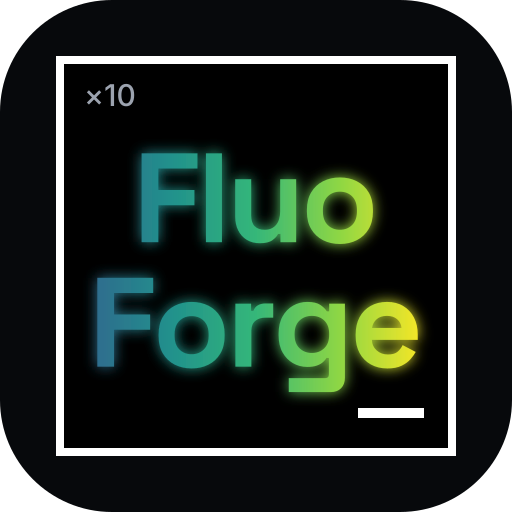

FluoForge
✈ Select
✀ Crop
A Text
― Scale bar
▤ Legend
↙ Annotate
□ Shape
✎ Pen / Path
⊞ Inset
▦ Grid
◫ Quick figure
▤ Series
A·B Letters
−
100%
+
1:1
Fit selection
+ Page
Rulers
Guides…
Snap on
Duplicate
↶ Undo
↷ Redo
↑ Import Image
New figure
From template
Save as template
⚙ Document
Save Project
Save As
Versions
Open project
⇩ Export
Figure check
Review
Export…
Export TIFF (flattened RGB)
Export PNG
Export SVG
Export PDF
Copy for other software…
Export panels (zip)…
Figure report…
Copy out
Vision
Normal
Deuteranopia
Protanopia
Tritanopia
Grey-scale
Theme
Light · Lavender
Light · Sage
Dark · Plum
Dark · Slate
Nothing selected
X
Y
W
H
Ratio
∠
↺ 90°
↻ 90°
Lock position
Adjust crop
Uncrop
Replace image…
Remove shape crop
Align
⇤
↔
⇥
↟
↕
↡
Distribute
⇄ H
⇅ V
⊞ Group
✂ Crop to shape
Copy display
Paste display
Link
Unlink

A blank space for your next figure
Create a document or open a FluoForge project to get started.
Create figure
Open project
Microscopy panels, editable annotations, publication exports.
Normal
Drop image file(s) here (TIFF, JPEG, PNG, BMP)